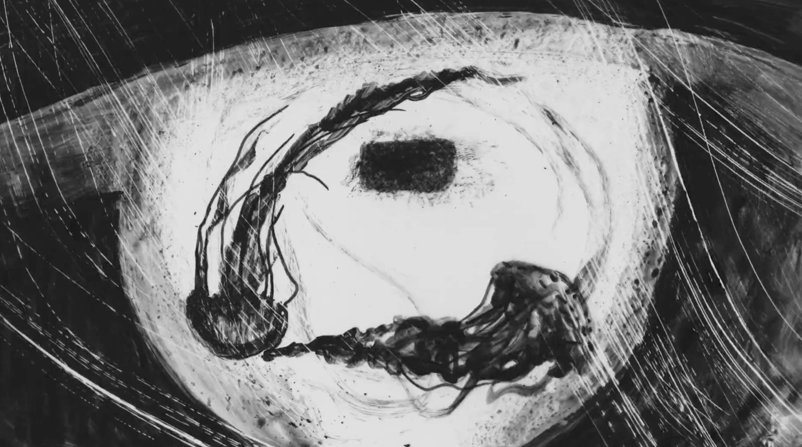
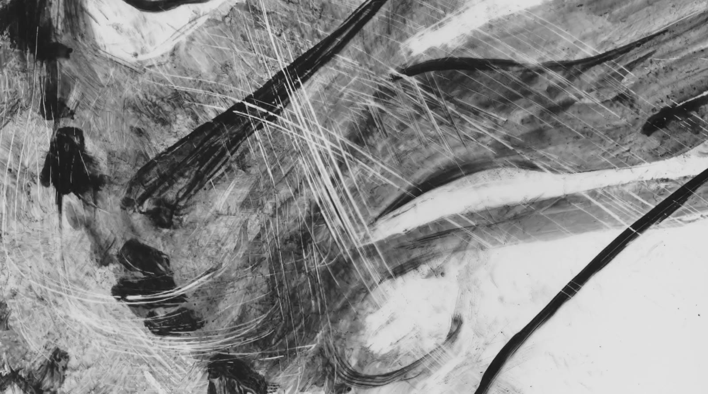

← Tutti i lavori
En Route
Milioni di persone in Africa ogni anno lasciano le proprie case per cercare un futuro migliore. Spesso si fermano nei paesi vicini; spesso, troppo spesso, raggiungono le coste libiche e tentano il viaggio in mare. Ma a quel punto non si può tornare indietro: si può solo andare avanti.

